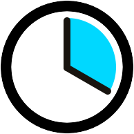

-
 培养创意编程思维
学习功能强大的创意编程工具openFrameworks，掌握创意编程中最有用的部分
培养创意编程思维
学习功能强大的创意编程工具openFrameworks，掌握创意编程中最有用的部分
-
培养创意编程思维
学习功能强大的创意编程工具openFrameworks，掌握创意编程中最有用的部分
-
培养创意编程思维
学习功能强大的创意编程工具openFrameworks，掌握创意编程中最有用的部分

虽然4年前我曾经是名程序员，但我一直认为编程是无聊又复杂的活，直到我来到OF COURSE遇见了openFrameworks。OF直接把所有乱七八糟的代码都删除，让我用短短几行代码就实现了以前做不到的效果。
 黄沙
纽约独立导演
黄沙
纽约独立导演 Three Drops Studio
商业制片人

你在基础式课程中会学到以下内容：
-
 openFrameworks
诞生于美国帕森斯设计学院的强大创意编程工具，它能让人们实现传统工具无法实现的神奇互动。
openFrameworks
诞生于美国帕森斯设计学院的强大创意编程工具，它能让人们实现传统工具无法实现的神奇互动。
-
openFrameworks
诞生于美国帕森斯设计学院的强大创意编程工具，它能让人们实现传统工具无法实现的神奇互动。

优秀的讲师，才能成就优秀的你
课程讲师-

鹏程 Paul Cheng
帕森斯设计学院特聘讲师
OF COURSE创始人 毕业于纽约帕森斯设计学院，获得设计与科技硕士学位。他专注于通过多种视觉媒体（如游戏，机器人和互动装置等）研究用电脑技术探索不同文化的差异。 -

Jason Levine
音乐家，表演家
计算机诗人 杰森·莱文是音乐家，表演家和计算机诗人。秉承连接不同艺术学科的使命，他视计算机语言为沟通不同媒体的通用语言。 -
鹏程 Paul Cheng
帕森斯设计学院特聘讲师
OF COURSE创始人 毕业于纽约帕森斯设计学院，获得设计与科技硕士学位。他专注于通过多种视觉媒体（如游戏，机器人和互动装置等）研究用电脑技术探索不同文化的差异。

Sven Travis
帕森斯设计与科技研究生院创始人帕森斯媒体和设计副教授
认识Sven的人都知道他是个高个子的光头大汉，喜欢说没有人听得懂的笑话。他总喜欢把音乐的音量开的很高，以至于有时候别人找上门来让他把声音开小。他在威斯康星长大，所以他是绿湾包装工队和威斯康星大学麦迪逊分校橄榄球队的铁粉。他酷爱骑自行车和滑雪。此刻他是素食主义者。
-

任远
设计师、工程师
《Processing互动编程》作者 -
任远
设计师、工程师
《Processing互动编程》作者 -
任远
设计师、工程师
《Processing互动编程》作者 -
任远
设计师、工程师
《Processing互动编程》作者


 2015年8月22日（周日）
2015年8月22日（周日）

 创意编程是什么?
创意编程是什么?
学习编程已经不再只是计算机专家或是软件开发人员的专利。来自各个领域的人们现在都想了解编程，因为编程不仅有趣，也是提升自我价值的技能。学习编程最让人兴奋的是能够通过编程去实现自己的创意，这被称为“创意编程”。创意编程已经在新媒体艺术，交互设计，时尚科技， 物联网，机器人等许多尖端领域扮演了重要角色。
创意编程是什么?
学习编程已经不再只是计算机专家或是软件开发人员的专利。来自各个领域的人们现在都想了解编程，因为编程不仅有趣，也是提升自我价值的技能。学习编程最让人兴奋的是能够通过编程去实现自己的创意，这被称为“创意编程”。创意编程已经在新媒体艺术，交互设计，时尚科技， 物联网，机器人等许多尖端领域扮演了重要角色。
创意编程是什么?
学习编程已经不再只是计算机专家或是软件开发人员的专利。来自各个领域的人们现在都想了解编程，因为编程不仅有趣，也是提升自我价值的技能。学习编程最让人兴奋的是能够通过编程去实现自己的创意，这被称为“创意编程”。创意编程已经在新媒体艺术，交互设计，时尚科技， 物联网，机器人等许多尖端领域扮演了重要角色。
创意编程是什么?
学习编程已经不再只是计算机专家或是软件开发人员的专利。来自各个领域的人们现在都想了解编程，因为编程不仅有趣，也是提升自我价值的技能。学习编程最让人兴奋的是能够通过编程去实现自己的创意，这被称为“创意编程”。创意编程已经在新媒体艺术，交互设计，时尚科技， 物联网，机器人等许多尖端领域扮演了重要角色。
创意编程是什么?
学习编程已经不再只是计算机专家或是软件开发人员的专利。来自各个领域的人们现在都想了解编程，因为编程不仅有趣，也是提升自我价值的技能。学习编程最让人兴奋的是能够通过编程去实现自己的创意，这被称为“创意编程”。创意编程已经在新媒体艺术，交互设计，时尚科技， 物联网，机器人等许多尖端领域扮演了重要角色。
创意编程是什么?
学习编程已经不再只是计算机专家或是软件开发人员的专利。来自各个领域的人们现在都想了解编程，因为编程不仅有趣，也是提升自我价值的技能。学习编程最让人兴奋的是能够通过编程去实现自己的创意，这被称为“创意编程”。创意编程已经在新媒体艺术，交互设计，时尚科技， 物联网，机器人等许多尖端领域扮演了重要角色。
创意编程是什么?
学习编程已经不再只是计算机专家或是软件开发人员的专利。来自各个领域的人们现在都想了解编程，因为编程不仅有趣，也是提升自我价值的技能。学习编程最让人兴奋的是能够通过编程去实现自己的创意，这被称为“创意编程”。创意编程已经在新媒体艺术，交互设计，时尚科技， 物联网，机器人等许多尖端领域扮演了重要角色。
创意编程是什么?
学习编程已经不再只是计算机专家或是软件开发人员的专利。来自各个领域的人们现在都想了解编程，因为编程不仅有趣，也是提升自我价值的技能。学习编程最让人兴奋的是能够通过编程去实现自己的创意，这被称为“创意编程”。创意编程已经在新媒体艺术，交互设计，时尚科技， 物联网，机器人等许多尖端领域扮演了重要角色。
| 沉浸式课程 | 基础式课程 | |
| 核心软件 | openFrameworks Processing Unity |
openFrameworks |
| 智能硬件 | Arduino Kinect Leap Motion Touch Board Raspberry Pi |
Arduion Kinect Touch Board |
| 项目 |
互动装置 无线玩具 3D光雕投影 数字化工艺 时尚可穿戴 手机应用 |
互动装置 |
| 师资力量 | 程鹏 张屹南 Jason Levine Marcella Godoy |
程鹏 张屹南 Jason Levine |
| 特邀嘉宾 |
任远，徐维静，黄石，沈婷瑊， 慕慧希, 周博山，许嘉，莫建俊 |
任远，徐维静，黄石，许嘉， |
| 职业支持 |
对接创业孵化器 对接众筹平台 对接人脉网络 推荐工作机会 |
对接人脉网络 |
| 学生支持 |
完善作品集 申请海外艺术名校 |
作品辅导 |
| 课程时间 |
8周 周一，周三，周五，每天8小时 共192小时+ |
 8周 每周一天，每天8小时 共64小时+ |
| 课程价格 | 价格：15,999元 立即报名 | 价格：5,999元 立即报名 |